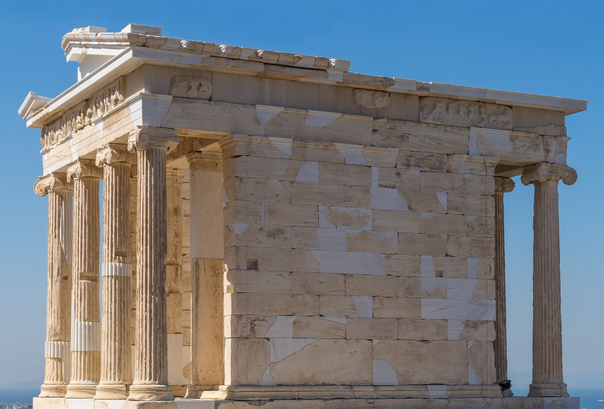
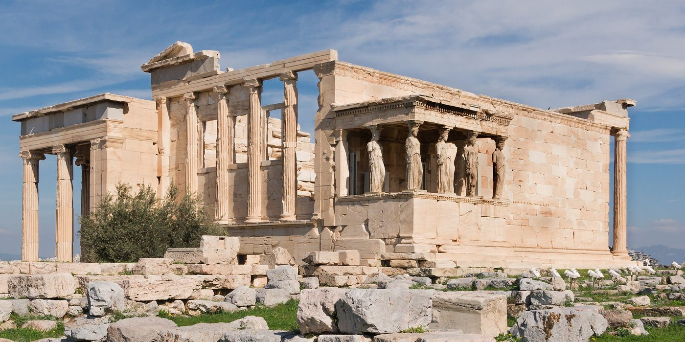

Unit 7 · Women in ancient Greece · Lesson 8
Priestesses and festivals
Religion was a public role for Athenian women. What did it give them, why did Athens allow it, and how do you answer two source questions under time?
Year 11 Ancient History · Present with → or space · Read on a phone with R

Images: Jebulon (CC0 1.0). Full details on the last slide.
Connect · 3 minutes · books closed · everyone writes one line · press K for the timer
Women’s work, and the evidence for it
Name two kinds of work Athenian women did, and the source for each.
Cold call two students: which kind of work, and which source?
Ischomachus describes his wife’s work in the house: spinning and weaving, and managing the stores and the slaves.
A speaker defending his citizenship says that many citizen women worked as nurses and labourers when times were hard.
Her gravestone calls her “Midwife (maia) and doctor (iatros)”.
None of these is a public office. Today: a different public role for women, in religion.
Learning intentions and success criteria · 2 minutes
Today’s goals
- explain the reasons for women’s status and role in Athenian religious life
- answer source questions under time, using reading time well
- explain two public religious roles of Athenian women, with evidence
- propose reasons why religion gave women a public role
- use reading time to deconstruct questions, read sources and plan
Syllabus outcomes: AH-11-02 proposes ideas about the varying causes and effects of events and developments · AH-11-05 analyses different types of sources for evidence to support a historical account or argument · AH-11-07 communicates historical understanding, applying historical knowledge, terms and concepts. Life Skills: AH-LS-04 recognises causes and effects of events or developments · AH-LS-11 communicates information about the past using historical terms and concepts.
Note-making · the routine for the whole course
How to structure your notes
questions and key terms, written after
short phrases, arrows (→ leads to), abbreviations (c. = about; BCE = Before the Common Era)
- 1A new page for each lessonA cue column about a quarter of the page wide; title and date at the top; room for a summary at the bottom.
- 2Listen and look, then writeDon’t copy while a slide is being explained. Phrases, not sentences; a source for every claim.
- 3Write your own notes at each ✎ checkpointThen compare with the model notes, one row at a time. Add what you missed in a second colour.
- 4Write the cue questions afterwardsUse exam verbs: identify, describe, explain. To revise, cover your notes and answer the cues.
- 5Finish with a three-sentence summaryTwo checkpoints today: priestesses and festivals · reasons for the role. Your timed answers go in your answer booklet, not your notes.
Key vocabulary · add to the unit word wall
Words for religion and for reading time
| Writing terms | Meaning |
|---|---|
| Reading time | Time before writing: deconstruct each question, read the sources, plan, in your head (in the HSC you may not write or mark the paper). |
| Usefulness / reliability | What a source can tell us for a question / how far we can trust it for that question: “reliable for … but not for … because …” |
| Added today | Meaning |
| Annotate | Mark a source with notes: who made it, when and why (its provenance), and the words that answer the question. You do this in writing time, not reading time. |
| Restored text | Words lost from a damaged inscription and filled in by editors. They are printed in [square brackets]. |
| Content terms | Meaning |
|---|---|
| Priestess / peplos | A woman who served a deity in public office / the robe woven for Athena’s statue. |
| Thesmophoria | A festival of Demeter for women only. The evidence suggests it was for citizen wives; non-citizen and unmarried women appear not to have taken part. |
| Stele (plural stelai) | An upright stone slab, often a grave marker with a relief and an inscription. |
| Added today | Meaning |
| By lot | Chosen by drawing lots, not by vote or by family. Athens used it for offices in the democracy. |
| Genos | A privileged descent group (plural genē). Some Athenian priesthoods belonged to women of particular families. |
1 · Priestesses and festivals · I do — think aloud: why choose Myrrhine by lot?
A gravestone for a priestess
Far-shining memorial of Kallimachos’ daughter, who first tended (amphepoleuse) the temple of Nike. She had a name companion to (sunemporon) her good repute (eulogiai), as by divine fortune Myrrhine she was called in truth; she was first to tend the statue (?) (hedos) of Athena Nike, (chosen) by lot from all, Myrrhine by good fortune.
A verse epitaph on a stele · found on the slope of Mount Hymettos · trans. S. Lambert and R. Osborne, Attic Inscriptions Online · round brackets give the Greek word or the translators’ gloss
Why would Athens choose a priestess “by lot from all”? Think first.
- 1Open to any Athenian womanAIO reads “all” as all Athenian women: not only the women of one family.
- 2A new methodAIO: “the first polis priesthood appointed in this way”, it seems, rather than from a genos. The lot was how the democracy filled many offices.
- 3The gods’ choiceThe verse says “by divine fortune” and “by good fortune”: the lot could be read as the gods choosing.
1 · Priestesses and festivals · I do — think aloud: why honour Lysimache with a statue?
A statue base for a priestess

[This . . . Lysimache] was by her descent (genos) (daughter) of Drakontides; she completed [eighty-eight] years; . . . sixty-four years she [served (latreus')] Athena and lived to see four [generations (genē)] of children.
A private statue base · trans. S. Lambert, Attic Inscriptions Online · [square brackets] = restored by the editors; the rest of the base calls her the mother of a man of Phlya (his name is lost) and gives the maker, [Demetrios]
Why honour Lysimache with a statue? Think first.
- 1A long service“Sixty-four years” as Athena’s priestess, and she lived to see four generations: a life worth showing on the Acropolis.
- 2A different route“By her descent (genos)”: AIO links her to the Eteoboutadai, the genos that supplied Athena Polias’s priestesses. Myrrhine was chosen by lot; Lysimache by birth.
- 3A family’s honourAIO calls it a private base, put up probably by her son, the man of Phlya in line 5, who may have been her kyrios when she died: a family’s pride, not a city’s gift.
1 · Priestesses and festivals · I do — festivals
Two festivals where women acted
At the Great Panathenaia, every four years, Athens gave Athena’s old wooden statue a new robe, the peplos. Olga Palagia (2008) argues that priestesses and young girls (the arrhephoroi) set up the loom, and that girls of marriageable age from leading families wove it. The evidence for the weaving girls is from inscriptions of the late 2nd and 1st centuries BCE, but she says it may well reflect Classical practice.
The idea is Palagia’s; the wording is ours.
A festival of Demeter and her daughter Persephone, for women only. In Athens it ran for three days in autumn, and its rites were kept secret. Non-citizen and unmarried women appear not to have taken part.
The best evidence is partly a comedy that makes fun of it, Aristophanes’ Thesmophoriazusae, so details are uncertain.
Two public religious roles: a priestess held an office; women and girls worked and took part in festivals.
Notes checkpoint 1 of 2
Myrrhine, Lysimache and the festivals
2 · The reasons · We do — in pairs, 2 minutes
Why did Athens give women a public religious role?
Propose three reasons. Use today’s sources and the two quotations. Then we rank them.
… women are necessary for the healthy functioning of the polis, a theme picked up in various other chapters as well.
Priestesses played an integral role in ensuring the health, safety, and functionality of the polis.
Jessica Paga, review of Worshiping Women: Ritual and Reality in Classical Athens (2008), Bryn Mawr Classical Review 2009.05.45 · the reviewer’s summaries of two scholars’ arguments
| Reason | Evidence | A limit |
|---|---|---|
| Goddesses’ cults needed priestesses | Myrrhine served Athena Nike; Lysimache served Athena Polias | Two cults, both of Athena: not proof for every cult |
| The city’s welfare was thought to depend on women’s rites | Paga on Vikela and Connelly (above) | A reviewer’s summary of two modern scholars, so what Athenians believed is inferred |
| Religion was a public role open to women, when little else was | An office by lot (Myrrhine); festivals for women | “Main public role” is a historian’s summary; politics is next lesson’s question |
2 · The reasons · We do — rank and justify, 2 minutes
Which reason mattered most?
- Rank the three reasons: most important → least.
- Justify your top reason with one piece of evidence and say its limit.
Cold call two pairs: which reason is your first, and what is your evidence?
It names the reason, gives evidence with its source (an inscription, or Paga on a scholar’s argument), says what the evidence cannot show, and says why the top reason matters more than the others: for example, whether it explains the office, the festivals, or both.
Notes checkpoint 2 of 2
Reasons for women’s religious role
3 · Writing focus · 6 minutes · I do → We do → apply
Writing focus: reading time
Reading time is for thinking, not writing: deconstruct each question, read each source for its provenance first, then plan one point per mark (department advice), all in your head. For the new-syllabus HSC paper (first set in 2028 — the one you will sit), NESA says “3 hours plus 10 minutes reading time”, and in the HSC you may not write on or mark the paper during it.
How reliable is the Phanostrate stele as evidence of women’s work in Athens? 4 marks Practice source, from Lesson 7 · the plan written as one sentence, for this lesson; a full answer develops each point
Phanostrate’s stele, set up about the middle of the 4th century BCE, calls her “Midwife (maia) and doctor (iatros)” and says “she caused pain to no-one”; it is probably reliable for how her skill was meant to be remembered, but it cannot show how many women did such work.
Read for the provenance: what, when
Plan a point: precise evidence
Plan a point: reliable for what, with probably
Plan a point: its limit
Your reading time is the apply: deconstruct both questions, read each source for who, when and why, and plan one point per mark, all in your head, with no sentences yet. In the first minute of writing time, mark the sources and jot your plan. Your Writing toolkit (booklet pages 3–4): the modality scale.
In pairs, deconstruct today’s two questions out loud: verb · topic · limits · do. Say what each asks you to do. Don’t answer them.
1 · What does the epitaph of Myrrhine reveal about the qualities Athenians valued in a priestess? 3 marks
2 · How reliable is Pliny’s note on Lysimache as evidence of women’s status in Athenian religion? 5 marks
Cold call: what does each question ask you to do? Then check your deconstruction against the table that follows.
3 · Writing focus · We do · check your deconstruction
Today’s two questions: what does each ask you to do?
1 · What does the epitaph of Myrrhine reveal about the qualities Athenians valued in a priestess? 3 marks
2 · How reliable is Pliny’s note on Lysimache as evidence of women’s status in Athenian religion? 5 marks
| Step | Question 1 | Question 2 |
|---|---|---|
| Verb | What … reveal: not a word in NESA’s glossary, but a self-explanatory question. It asks what this source shows (its value for the question), not what was true of every priestess | How reliable … as evidence of: also self-explanatory. It asks you to judge the source for this question: reliable for what, and not for what |
| Topic | the qualities valued in a priestess | women’s status in Athenian religion: their standing, not only what they did |
| Limits | the epitaph of Myrrhine only (about 410 BCE); “reveal” means what it shows, not every priestess | Pliny’s note only, not the inscription; judged for women’s status, not for every question |
| Do | 3 marks: about three points (department advice), each tied to the epitaph’s own words | 5 marks: a developed paragraph (department advice): provenance, value, purpose, a judgement of “reliable for … but not for …”, a limit |
3 · Timed source questions · reading time · 5 minutes · press K, click 5, then Start · think only: no writing, no marking
Reading time: think now, write later
- 1Deconstruct both questionsDeconstruct each question first: verb · topic · limits · what your answer must do. Say each step in your head.
- 2Read each source for its provenanceWho made it, when, where and why. Then notice the words that answer each question.
- 3Plan one point per mark (department advice)Three points for the 3-mark question, five for the 5-mark question. Decide the order and your time: about 6 minutes and 12 minutes.
NESA’s 2027 HSC student guide says: “You must not write on or mark your exam in any way or use any equipment (including highlighters).” So practise it today: think only. In the first minute of writing time, mark the sources and jot your plan.
1 · What does the epitaph of Myrrhine reveal about the qualities Athenians valued in a priestess? (3 marks)
2 · How reliable is Pliny’s note on Lysimache as evidence of women’s status in Athenian religion? (5 marks)
| Question 1 · 3 marks | |
|---|---|
| Point 1 | |
| Point 2 | |
| Point 3 |
| Question 2 · 5 marks | |
|---|---|
| Origin | Who made it, when, and how long after? |
| Value | What does it say that helps? |
| Purpose | Why was it written? |
| Reliability | Reliable for … but not for … because … |
| Limitations | What can it not show? |
Use the OVPRL routine on page 2 of your booklet.
3 · Timed source questions · the paper · Question 1
The paper: the epitaph of Myrrhine
Far-shining memorial of Kallimachos’ daughter, who first tended (amphepoleuse) the temple of Nike. She had a name companion to (sunemporon) her good repute (eulogiai), as by divine fortune Myrrhine she was called in truth; she was first to tend the statue (?) (hedos) of Athena Nike, (chosen) by lot from all, Myrrhine by good fortune.
A verse epitaph on a stele (a gravestone), found on the slope of Mount Hymettos, near Athens · trans. S. Lambert and R. Osborne, Attic Inscriptions Online · round brackets give the Greek word or the translators’ gloss · Nike = the goddess of victory, worshipped with Athena on the Acropolis
What does the epitaph of Myrrhine reveal about the qualities Athenians valued in a priestess?
Words to know: tended = looked after (served) · stele = an upright gravestone · by lot = chosen by drawing lots · epitaph = words written on a gravestone.
3 · Timed source questions · the paper · Question 2
The paper: Pliny’s note on Lysimache
Chæreas made statues of Alexander the Great and of his father Philip. Desilaüs made a Doryphoros and a wounded Amazon; and Demetrius a statue of Lysimache, who was priestess of Minerva sixty-four years. This statuary also made the Minerva, which has the name of Musica …
Pliny the Elder (23–79 CE), a Roman author writing in Latin · this passage is in the book on metals, in a list of bronze statues and the sculptors who made them · Lysimache’s statue base is dated about 360 BCE (Attic Inscriptions Online), more than four centuries before · trans. J. Bostock and H. T. Riley (1855) · Minerva = the Roman name for Athena
How reliable is Pliny’s note on Lysimache as evidence of women’s status in Athenian religion?
Words to know: priestess = a woman who served a god in public office · statuary = a maker of statues · reliable for … but not for … = judge a source for one question, not for all.
3 · Timed source questions · writing · 20 minutes · press K, click 20, then Start · answer booklet
Write your two answers
Question 1 · 3 marks · What does the epitaph of Myrrhine reveal about the qualities Athenians valued in a priestess?
Question 2 · 5 marks · How reliable is Pliny’s note on Lysimache as evidence of women’s status in Athenian religion?
- In the first minute, mark the sources and jot your plan: one point per mark (department advice).
- Question 1: use the epitaph’s own words as evidence.
- Question 2: provenance first; then “reliable for … but not for … because …”
- Match each claim to its evidence: probably, suggests, shows.
Assess whether religious office gave Athenian women real public authority or only honour.
Use your Notes 1 and 2 and fill in your planning grid in the first minutes. Word bank:
Frames: “The epitaph reveals that …, because it says …” · “Pliny’s note is reliable for … but not for … because …” Modality: may · probably · suggests · shows
- 20:00 → 19:00Mark the sources and jot your plan
- 19:00 → 13:00Question 1 · about 6 minutes
- 13:00 → 1:00Question 2 · about 12 minutes
- 1:00 → 0:00Check that each answer addresses its question
Check · 8 minutes · pens down · circle the strongest sentence in each answer
Circle your strongest sentence, and name its feature
- Circle the strongest sentence in Question 1 and in Question 2.
- Next to each, name its feature from the list.
- Be ready to say why it is strong.
Cold call two students: read your circled sentence, and name its feature.
- 1A provenance phrasewho, when, what kind of source
- 2Precise evidencea short quotation woven into the sentence
- 3Reliable for what?“reliable for … but not for … because …”
- 4Modality matched to the evidenceprobably · suggests · shows
- 5A limitwhat the source cannot show
Check · marking guidance · after you have written · mark in another colour, then hand in
What a strong answer includes
- A good reputation: her name was a “companion to” her “good repute (eulogiai)”.
- Descent: the verse opens with her father, “Kallimachos’ daughter” (AIO reads this as showing she was properly qualified by descent).
- Being first and fitting: she “first tended” the temple, and her name, Myrrhine (“myrtle”, a sacred plant, AIO), suited a priestess. (Hedge: one epitaph; who set it up is not stated.)
- Origin: Pliny the Elder, a Roman, writing in Latin about 77 CE, more than four centuries after the statue; translated 1855.
- Value: a statue by Demetrius of Lysimache, priestess for sixty-four years, which agrees with the inscription for Lysimache.
- Purpose: a list of bronze statues and their makers for Roman readers; not about priestesses or women’s status.
- Reliability: reliable for the statue and her long service; not for what the office meant for women’s status. (A very strong answer notices that her name on the base is restored, in square brackets, so the base does not confirm Pliny fully independently.)
- Limitations: one woman, probably from a privileged family (a genos); it cannot show how others were chosen or what authority she had.
Finish your notes If time · or at home
Summary: three sentences
- How was Myrrhine chosen, and how was Lysimache’s priesthood different?
- In which festivals did women act, and how do we know?
- Why did religion give women a public role, and what are the limits of the evidence?
Myrrhine, the first priestess of Athena Nike, was chosen “by lot from all”, whereas Lysimache served Athena Polias for sixty-four years as a woman of a privileged descent group. Girls from leading families also wove Athena’s peplos, as Palagia argues, and the Thesmophoria was a women’s festival, although non-citizen and unmarried women appear not to have taken part. Religion probably gave women a public role because goddesses’ cults needed priestesses and the city’s welfare was thought to depend on women’s rites, although these reasons rest on a few inscriptions and on modern scholars’ readings.
Practice and review · 1 of 4 · true, false, justify
True or false? Justify your answer
- 1Myrrhine became priestess because her father was a priest. False — her epitaph says she was chosen “by lot from all”, and AIO reads all Athenian women.
- 2Every word of the Lysimache inscription is clear on the stone. False — AIO prints restored words in [square brackets], including her age and the verb “served”.
- 3Lysimache’s statue base says she served Athena for sixty-four years. True — “sixty-four years she [served (latreus')] Athena”, though AIO restores the verb.
- 4Reading time is for writing your answer in full. False — it is for thinking: deconstruct, read for provenance, plan. In the HSC you may not write or mark anything during reading time.
- 5Pliny saw Lysimache serve as priestess. False — he wrote about 77 CE, more than four centuries after the statue base, which is dated about 360 BCE.
- 6A source that is reliable for one question is reliable for every question. False — reliability is judged for a question: reliable for … but not for … because …
- 7The Thesmophoria was open to every woman in Athens. False — it was for women only, and non-citizen and unmarried women appear not to have taken part.
Practice and review · 2 of 4 · writing · deconstruct each question first · read the marks
Deconstruct a question, then fix a sentence
What does the statue base of Lysimache reveal about the qualities Athenians valued in a priestess? (3 marks)
[This . . . Lysimache] was by her descent (genos) (daughter) of Drakontides; she completed [eighty-eight] years; . . . sixty-four years she [served (latreus')] Athena and lived to see four [generations (genē)] of children.
trans. S. Lambert, Attic Inscriptions Online
Verb: “What … reveal” is self-explanatory: what this source shows. Topic: the qualities valued in a priestess. Limits: this base only, partly restored. Do: about three points, each tied to its words, and no claim beyond one woman.
“Pliny proves that priestesses had great power in Athens.”
Pliny’s sentence says Demetrius made a statue of Lysimache, who was priestess of Minerva sixty-four years. Rewrite the sentence so that its strength matches what the evidence can show.
Pliny’s note suggests that Lysimache served as a priestess for a long time and was honoured with a statue; it cannot show how much power priestesses had.
Practice and review · 3 of 4 · extension · assess
Real public authority, or only honour?
Assess whether religious office gave Athenian women real public authority or only honour.
Shape: Judge → Evidence → Analyse → Evaluate → Resolve. NESA: assess means ‘Make a judgement of value, quality, outcomes, results or size.’ (Glossary of key words)
… it demonstrates that priestesses could serve as pseudo-state officials, the near equals of their male political counterparts.
Jessica Paga, Bryn Mawr Classical Review 2009.05.45 · a reviewer’s summary
Religious office gave Athenian women honour and public standing more clearly than it gave them authority. Jessica Paga, summarising Joan Breton Connelly’s chapter on priesthoods, writes that priestesses “could serve as pseudo-state officials, the near equals of their male political counterparts”, and Myrrhine’s epitaph shows an office filled “by lot from all”, as the democracy filled other offices. However, “pseudo-state” and “near equals” are hedges, and a reviewer’s summary is not Connelly’s own argument: neither inscription says what a priestess could decide, and Lysimache’s statue base, which Attic Inscriptions Online classes as private, shows a family’s pride rather than a grant of power by the city. On balance, the evidence shows that office made a woman visible and honoured, and only partly that it made her an official with authority.
Practice and review · 4 of 4 · cover your notes and answer from memory
Quick checks
- How was Myrrhine chosen, and what does AIO say about it? “By lot from all”: AIO reads all Athenian women, and says it seems the first polis priesthood appointed in this way rather than from a genos.
- How was Lysimache’s priesthood different? She served Athena Polias for sixty-four years and was “by her descent (genos)” of a family that supplied that priesthood (AIO: the Eteoboutadai). Her statue base is partly restored and private.
- Name two festival roles for women, with evidence. Weaving Athena’s peplos (Palagia, 2008) and the Thesmophoria, a festival of Demeter for women only.
- Give one reason why Athens gave women a public religious role, and its limit. Goddesses’ cults needed priestesses (two inscriptions, both of Athena); or the city’s welfare was thought to depend on women’s rites (Paga, summarising two scholars: a modern reading).
- What is reading time for, and what do you do in it? Thinking, not writing: deconstruct each question, read each source for its provenance first and plan one point per mark, in your head (in the HSC you may not write on or mark the paper during reading time).
- What does “reliable for … but not for …” mean? A source is judged for one question: reliable for what it can show about that question, but not for what it cannot.
Sources and credits
Where everything comes from
Attic Inscriptions Online (AIO), IG I³ 1330 (Myrrhine; trans. S. Lambert and R. Osborne), IG II² 3453 (Lysimache; trans. S. Lambert) and IG II² 6873 (Phanostrate; trans. S. Lambert and L. Totelin), CC BY-SA 3.0; the commentary quoted is AIO’s. Pliny the Elder, Natural History 34.76 (Book 34, chapter 19): trans. J. Bostock and H. T. Riley (London: Taylor and Francis, 1855; public domain), Perseus Digital Library (CC BY-SA 3.0 US). Connect: Xenophon, Oeconomicus 7 and Demosthenes 57, as in Lesson 7.
Historians: Olga Palagia, “Women in the Cult of Athena”, in N. Kaltsas and A. Shapiro (eds), Worshiping Women: Ritual and Reality in Classical Athens (Onassis Foundation USA, 2008), pp. 31–37, her account of the peplos paraphrased, with no words quoted. Jessica Paga, review of that volume, Bryn Mawr Classical Review 2009.05.45, brief quotations for study. Background summaries (not quoted at length): Wikipedia, “Thesmophoria”, “Women in classical Athens”, “Temple of Athena Nike”, “Erechtheion” and “Natural History (Pliny)” (CC BY-SA 4.0). NESA, Ancient History HSC examination specifications.
Outcomes and content: NSW Education Standards Authority (NESA), Ancient History 11–12 Syllabus (2024). © NESA. Directive verbs: NESA, Glossary of key words.
- The Temple of Athena Nike, Acropolis, Athens, built about 420 BCE · Photo: Jebulon · CC0 1.0 · source
- The Erechtheion, Acropolis, Athens, late 5th century BCE, from the west · Photo: Jebulon · CC0 1.0 · source


All images are public domain or openly licensed, and were resized or cropped for the web. Each is shared under the licence shown.